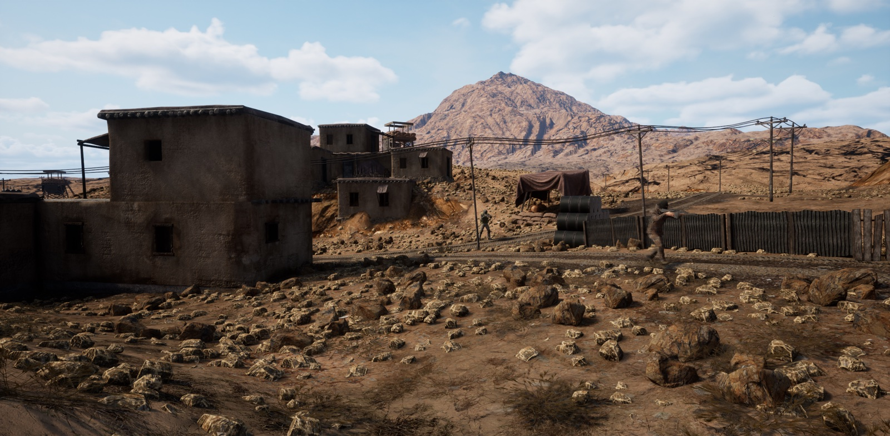
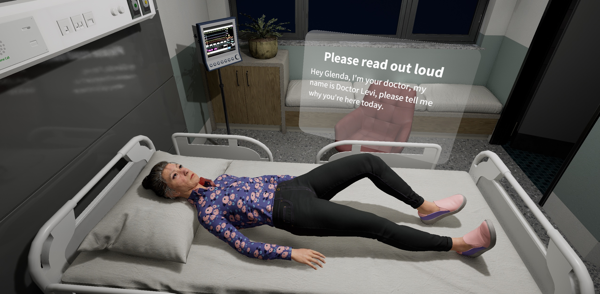
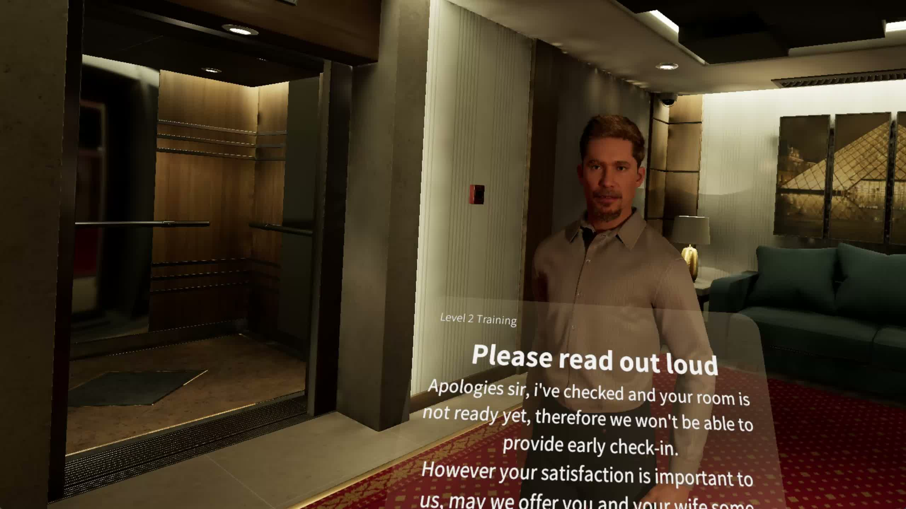
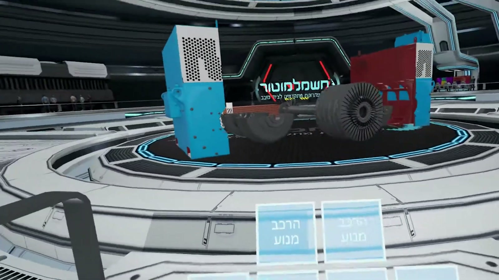
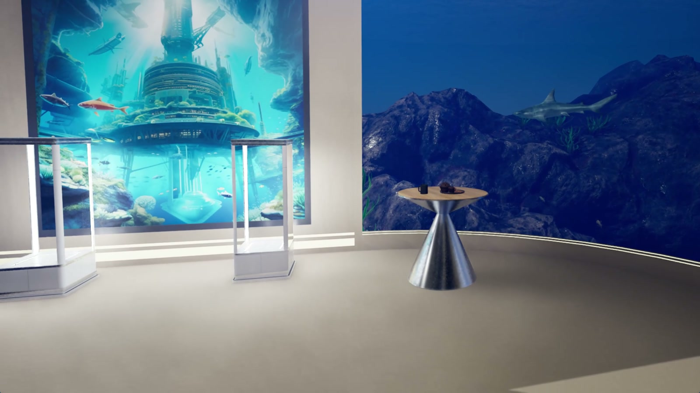
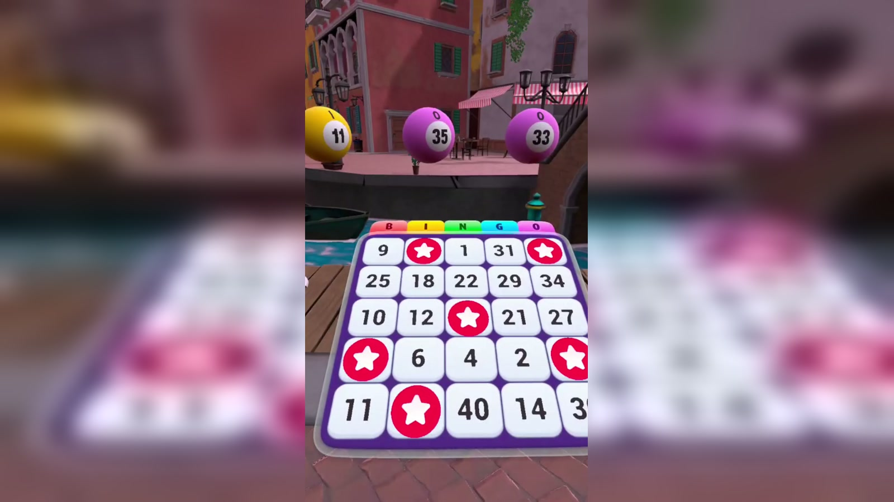
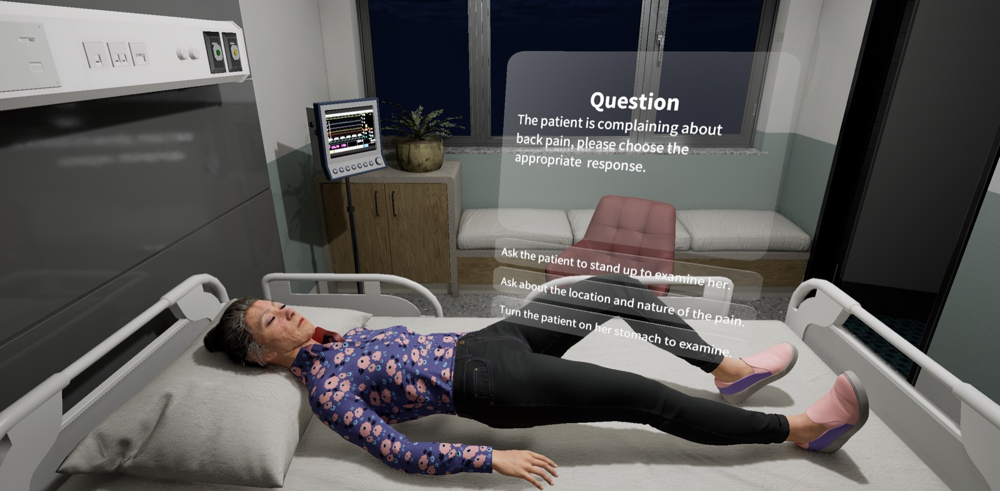
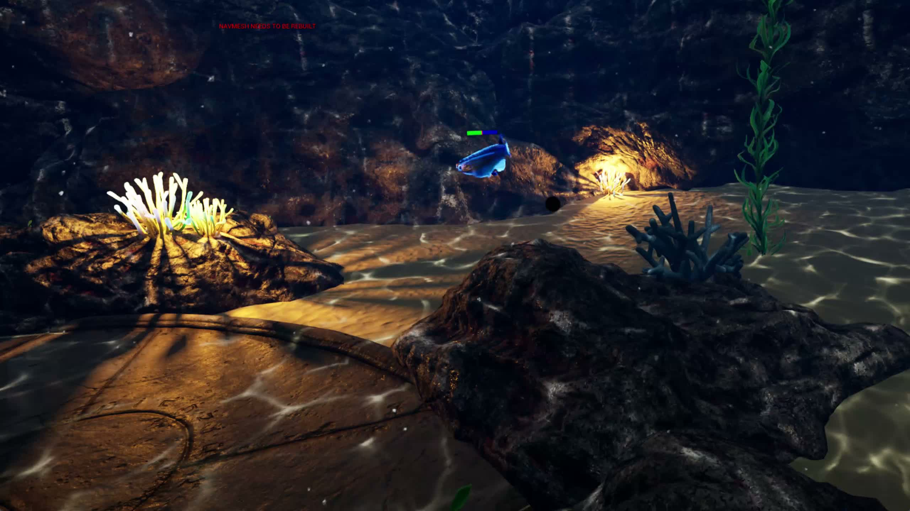
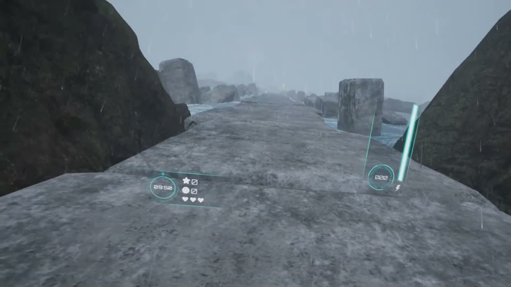

Founder Lane
Founder MVPs
For founders who need a real product prototype, investor demo, or MVP fast.
Explore Founder MVPsAI-Accelerated Product Prototyping
I help founders and teams turn rough ideas into working MVPs, internal tools, and immersive prototypes, with a background in Unreal Engine, VR, and interactive systems.
Choose The Lane
Founder Lane
For founders who need a real product prototype, investor demo, or MVP fast.
Explore Founder MVPsOperations Lane
For teams that need dashboards, workflow tools, admin systems, or AI-assisted internal apps.
Explore Internal ToolsReal-Time Lane
For clients who need interactive demos, Unreal prototypes, VR concepts, or immersive training experiences.
Explore Interactive WorkFounder MVPs
Best for founders who have a promising idea, need something real to show investors or early customers, and want practical scope control instead of an oversized first build.
Strip the idea down to the core flow that needs to be tested or shown.
Focus on the interaction, logic, and presentation that matter most.
Review early, adjust scope quickly, and avoid spending time on the wrong layer.
Polish what a user or investor actually needs to understand in one session.
The result should be presentable, reviewable, and useful for the next decision.
Investor Demo
Good for investor meetings, sales conversations, or early partner buy-in when a deck is no longer enough.
Validation MVP
Useful when the goal is to test the concept with real users before committing to a heavier build.
Interactive Demo
Especially strong when the idea is hard to explain without showing the flow, interface, and interaction.
Send the rough idea, not the polished spec. I can help define the smallest useful build and turn it into something real.
Talk About an MVPInternal Tools / Automation
For teams that need something useful, not enterprise theater: dashboards, internal portals, workflow utilities, and AI-assisted tools built around the way the work actually happens.
Ops Dashboard
Good for operational visibility, approvals, queues, and status tracking without overcomplicating the system.
Workflow Portal
Useful when generic software creates workarounds instead of solving the process.
AI Utility
Best when the goal is saving team time with a narrow, clearly defined workflow rather than a massive platform.
Find the bottleneck, the duplicate effort, and the decisions that need a clearer interface.
Start with the dashboard, panel, or flow that removes the most friction.
Use the team quickly, spot edge cases, and simplify based on actual usage.
Bring AI or workflow automation into the narrow tasks where it saves time reliably.
If the current process is spread across spreadsheets, chat threads, and manual follow-ups, I can help turn it into one usable system.
Talk About a Tool BuildInteractive / Immersive Prototypes
This is the strongest part of the portfolio: immersive training, interactive demos, simulation-driven concepts, and Unreal Engine prototypes that need convincing real-time interaction.
Selected Interactive Work
Training Simulation
Led delivery of simulation-focused AR/VR environments for emergency services, hospitals, and enterprise training contexts.
Published VR Title
Built and released a VR title on Steam while handling Unreal production workflows from concept through launch.
View on SteamReal-Time Delivery
Delivered Unreal Engine 4/5 work across PC, mobile, iOS, VR, and cinematic pipelines, balancing performance, interaction, and deployment requirements.
If the build needs believable interaction, simulation logic, or real-time presentation quality, that is where I bring the most depth.
Talk About an Interactive PrototypeProject Gallery









Featured Video
Background
Leading AR/VR simulation work for emergency services, healthcare, and enterprise training environments.
I define technical direction, build core systems, and keep delivery aligned with real operational goals and stakeholder feedback.
Delivered Unreal Engine 4/5 projects across PC, mobile, iOS, VR, and cinematic pipelines as both a solo contributor and part of larger teams.
Practical mix of C++, Blueprints, UI/UX thinking, optimization, and shipping workflows depending on what the build actually needs.
Managed technical and operational programs including sensor development, HQ relocation, and rollout of new technologies.
That experience sharpened how I think about planning, execution, coordination, and building tools around real organizational needs.
Ran a VR event business delivering immersive hardware experiences for social and corporate events.
Built the operation end to end, from setup and logistics to on-site execution and audience-facing experience design.
Skills
Advanced UE4/UE5 workflows with practical C++ and Blueprint implementation for gameplay, interaction, and systems design.
Scenario-based simulations for training and high-stakes environments, with strong hands-on work in UI/UMG, Behavior Trees + EQS, and VR interaction systems.
MVP shaping, investor demos, workflow mapping, and practical first-version planning with a strong product-thinking mindset.
End-to-end visual prep and delivery with Adobe Suite tools, including scene polish and edit-ready media outputs.
Practical in-engine content work including mesh cleanup, Control Rig animation passes, and Unreal modeling tool workflows.
From PC and mobile to iOS and VR hardware deployments, including profiling and optimization for stable runtime performance.
Structured planning, milestone tracking, UI/UX alignment, and stakeholder coordination to keep end-to-end delivery focused and reliable.
Strong AI-assisted development workflow for rapid prototyping, refactors, debugging, and deeper C++ assistance when needed.
Hands-on leadership across planning, QA, implementation, and release with practical Git/Perforce workflows and general multiplayer familiarity.
Tool Stack
Work With Me
If you need an MVP, an internal tool, or an Unreal / VR prototype, send the rough version. Bullet points, sketches, and half-formed notes are completely fine.